V131 fixed ADC projection
One native pixel per PNG pixel; browser zoom100%. Horizontal scrolling preserves pixels. ADC changes only; protected positive-prior outputs unchanged.
bark-triplet.png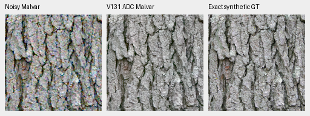
bark-comparison.png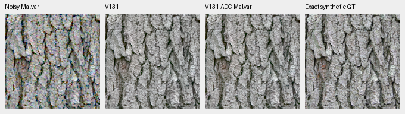
fur-triplet.png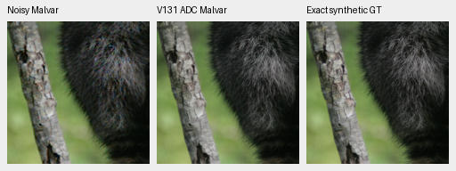
fur-comparison.png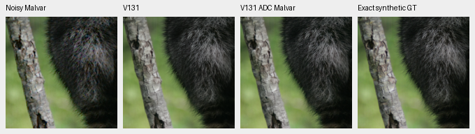
adc-color-outlier-triplet.png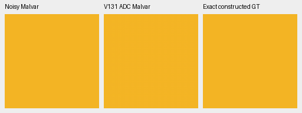
protected/main-overcast-sky-comparison.png protected/main-building-detail-comparison.png
protected/main-building-detail-comparison.png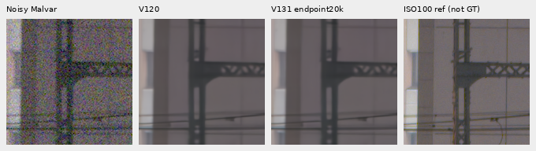
protected/main-foliage-comparison.png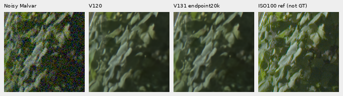
protected/main-chain-link-fence-comparison.png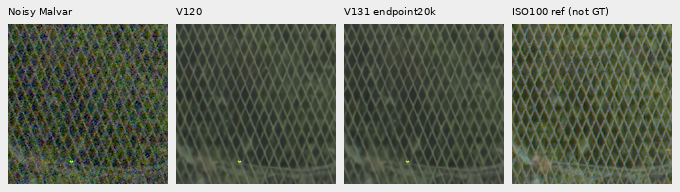
protected/mesh-nominal-fine-green-mesh-left-comparison.png protected/mesh-nominal-fine-green-mesh-right-comparison.png
protected/mesh-nominal-fine-green-mesh-right-comparison.png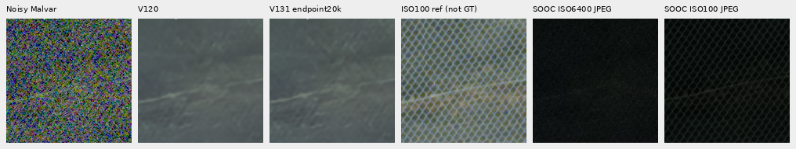
protected/mesh-profile3879-fine-green-mesh-left-comparison.png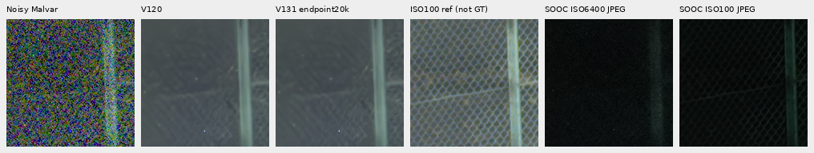
protected/mesh-profile3879-fine-green-mesh-right-comparison.png Worst source regression versus V131; selected after scores, fixed native160 ROI
Worst source regression versus V131; selected after scores, fixed native160 ROI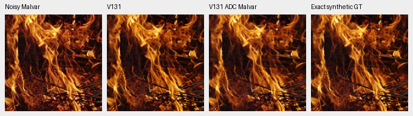